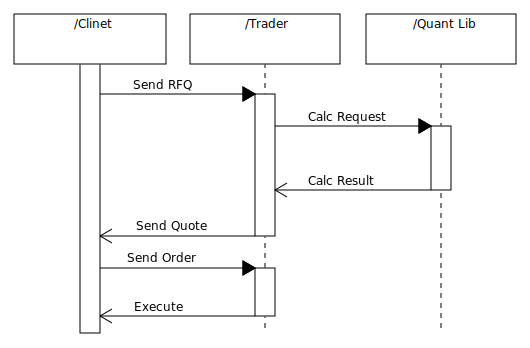
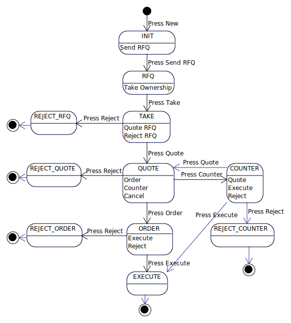

Background
This page introduces a model of high speed Internet application for financial industry through developing a prototype of server-client application over the Internet. The client is single page application (SPA) with React.js and the server is developed from scratch based on C++. The server-client communication is Web Socket2. Web Socket2 and C++ application enables to handle high volume transaction over the Internet. The application is just a prototype application so that it cannot support real business but it is enough to examine the feasibility to use this model in the real world. The supposed business is OTC option trade for client and trader communication over the Internet. Client can send a RFQ (Request For Quotation), then trader can response a quote for this. Client can oder or reject their quote, then trader can execute a order from client. The sequence sequence is below.
 The real business needs bid/offer volatility but to make it easier to examine it from technology point of view, bid/offer volatility quote is not supported. Through developing this prototype application, we will examine not only technologies but also development process. What is necessary to increase quality but reduce cost.
In analysis, we will discuss following later in this document.
The purpose for this project is to study feasibility to use ReactJS as a financial frontend system and C++ backend server for evaluating productibity and stability comparing Java based backend development through developing prototype option quoting system. For frontend side, we focus on functionality, usability, and productivity for financial system. For backend, C++ has huge advantage for performance and resource management but productivity is lower than Java or other interpreter language. We focus on productivity and stability for backend development and test first method is one of the solutions for this area. The test case must be included not only functionality test case but also performance test and memory leackage test. Through this test first approach, we will find design patterns to achieve our goal to become one of the options comparing Java or other interpreter language. The one of big concerns is memory leackage for C++. The Java or other interpreter language has garbage corrector or similar function to resolve this issssue. Recently C++ supports similar functionality, shared_pointer. Also test first approach is another solution to check memory leakage. A test case to execute a method repeatedly within a loop enables us to check memory growth and performance to prevent memory leakage. Also it enhances memory usage. Recently in Java or other interpreter language has the issue for memory usage cause developer relys on garbage correction overmuch. The one of the solution for this issue is C++ and test first approach. C++ can control memory allocation directly and we can check that behavior in the unit test. The destructor for the class is executed immediately to release resources in C++ but we have to wait garbage corrector in Java or other interpreter languate. Garbage corrector is not under our control. It is hard to test it because it has very tight dependency on conditions.
Prototype System Flow
This application is for communicating with client and broker to decide price and trading condition for option. The client can send a RFQ (request for quotation) for option. The trader can evaluate an option value for the RFQ based on black sholes model, then send a quotation to the client. The client can order, counter, or reject a quotation. If client sends an order, then broker can accept or reject that order because while from quotation to order, market will be moved rapidly and it is impossible for trader to hedge the trade. Once trader can accept an order, then this trade will be executed and this trade makes open position. The client can make an close RFQ with a click.
Analysis and Solution
Database Design
Financial system requires performance. The design policy is following.
The advantage for this policy is that there are two types of database engine, for example postgress SQL and Maria DB. Both database engines are very popular open source software. The difference is that update operation. Postgress SQL reallocates record space for update operation but Maria DB is different. The Maria DB allocates record space if record size is variable. If it is fixed record size, it overwrite a record when it is update operation. That makes better performance because it does not need to search free space in the disc. Off cause some of engine supports pre allocation model. Even though, that will allocation always as a new record, so that it wastes disc space and messing up the sequence of records. The requesce of records means for financeial sytem, the order of record is very ... basically the order of record is key for the performance. From hardware point of view our hard disk is composed of disk and reader. If record is ordered in the disk, it is not necessary to jump on the disk. It needs simply read in the disk. Also hard disk reads data based on block size, so that the record size is less than block size and block contains multiple records, one read can load multple record but if each recorrds are located in the multiple block, if the record are spreading in multiple blocks, the reader jumps on the disk and load block with unnecessary memory. For example, the recorrd size is 1k and block size is 4k, then each block has only one record to be load, then that waste 4 times. If it uses RAID 5, that waste will increase related to the number of disk theoretically.
The advantage for C++ are;
For memory issue for modern interpreter language. sometimes I found a code which uses constructtor to switch on and destructor to switch off but this approach is only effective C/C++ language. Other interupter language will cause issue this approach because some interrupter language will not gurantee the execution of destructor. Instead use of destructor, most interpreter language supports try-catch-finally functtionality to execute codes developer intendedly in the end of source code in finally block.